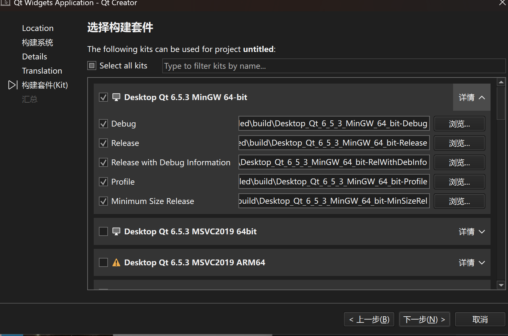

下载资源：[链接][https://mirrors.tuna.tsinghua.edu.cn/qt/official_releases/online_installers/]
在下载目录打开命令行，输入
文件名 --mirror https://mirrors.tuna.tsinghua.edu.cn/qt
部分用户下载时可能出现403 Forbidden，可以更换镜像源至
文件名 --mirror http://mirrors.ustc.edu.cn/qtproject/
PS：硬盘空间一定要够，所有组件下载后共计300多GB
PS：Qt打开比较慢。
1.点击创建项目

2.点击选择
3.点击下一步

4.点击下一步

5.点击下一步
6.点击下一步
7.选择与您系统环境相同的编译器(可以多选)
例如：您是Amd64位，就不能选择Android或Arm64。

8.点击下一步。
9.点击完成。

正常情况下，侧边栏应该有很多文件。如果您和我一样，请继续。
如果您的侧边栏只有一个CMakeLists.txt文件，请跳转到这里
将main.cpp文件修改为
#include <QApplication>
#include <QMainWindow>
#include <QPushButton>
int main(int argc, char* argv[])
{
QApplication a(argc, argv);
QMainWindow w;
QPushButton b(&w);
b.setText("Hello QT!");
w.show();
return a.exec();
}

点击侧边栏倒数第三行的绿色三角运行。

等待输出。

或者使用release，点击小电脑图标，切换到release生成
再次编译运行

我们发现，不管是哪种编译方式，直接在文件夹打开，会出现以下情况。

我们来到应用列表。
C:\Users\Lenovo\AppData\Roaming\Microsoft\Windows\Start Menu\Programs\Qt
找到对应编译器。

点开Qt开头的程序。
切换到文件目录。

输入
windeployqt 文件名.exe

这样目录中就多了很多文件。
这次再打开文件。
就可以了。

如果侧边栏只有一个文件，请点击窗口顶部的编辑中的preference

请点击所选编译器，并更改配置与我一样。

然后再去系统环境变量，将cmake添加到环境变量中。
点击path
点击添加
添加
Qt安装路径\Tools\CMake_64\bin
点击确定并重启Qt。
如果还是不行，请跳转到创建文件的第4步左右，并把cmake改为qmake即可。